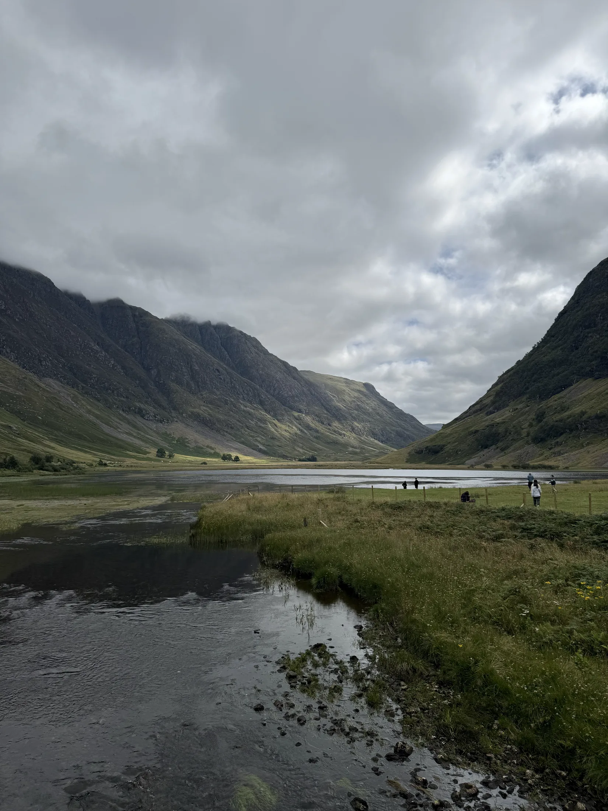

Landscape, weather, myth and memory — reflections, music, films and stories connected to travelling through Scotland.
The strongest memories are often not single sights, but the feeling around them — rain on windows, long Highland roads, old stories, whisky warmth and music that seems built from landscape.
Less a cultural guide and more a companion to the emotional atmosphere of the journey itself — roads through Glencoe, ferries, pub warmth, Highland weather and stories that linger afterwards.
Reading
Three places worth beginning, depending on what stayed with you.
Broad, readable Scottish history connecting the Picts, clans, Jacobites, Enlightenment and Highland identity into one long narrative. The clearest single route through the whole of Scotland’s past — and long enough to feel satisfying without becoming a project.
Edinburgh during the Scottish Enlightenment — the decades when this relatively small northern city produced thinkers who helped reshape economics, philosophy, medicine and geology. Answers the question most visitors quietly ask: how did this happen here?
A readable guide to the rivalries, loyalties and identities that still echo around Highland place names, glens and castles. The best short introduction to understanding who lived in these landscapes and why the clan system shaped everything that followed.
Reading
Going deeper into the forces that made Scotland what it is.
A highly engaging account of how Scotland transformed from one of Europe’s poorest nations into a driving force behind modern economics, engineering, medicine and philosophy. Particularly good for understanding why Edinburgh became what it became.
A gripping and often heartbreaking account of the forced displacement of Highland communities during the 18th and 19th centuries — the event that emptied the glens and sent thousands of Scots to Canada, Australia and beyond. Prebble’s interpretation has been challenged by later historians, but as a narrative account it remains powerful and widely read. Worth knowing it is contested, but worth reading.
If Magnusson feels like too large a commitment, Maclean covers the same ground in a fraction of the space — fast, readable and surprisingly comprehensive. A good first book before moving to the longer histories.
Reading
Characters, legends and a few books worth packing rather than studying.
The Jacobite world after Culloden through one of Scotland’s most enduring figures — the woman who helped Bonnie Prince Charlie escape after the Rising collapsed.
A witty and accessible dismantling of Scottish myths, stereotypes and tartan romanticism — enjoyable for anyone who found themselves wondering how much of what they saw was ancient and how much was invented.
Whisky, clans, roads and Highland absurdity explored with humour by two actors deeply connected to Scotland on screen. Lighter than the other books on this page — but a good read for the road.
The legend linking Bonnie Prince Charlie, the Jacobites and one of Scotland’s most recognisable whisky liqueurs. Niche — but fun if the story caught your interest on tour.
Reading
Two classics that shaped how Scotland sees — and is seen by — the rest of the world.
A classic Highland adventure — rugged landscapes, loyalty and long journeys north through the old Jacobite world. Still one of the best introductions to the Highlands in fiction.
The novel that more or less invented the romantic image of the Scottish Highlands carried by visitors ever since. Historically important rather than an easy read — but worth knowing about, and The Emperor’s New Kilt is a good companion piece for understanding what Scott actually invented.
After Glencoe, films about Scotland can feel less like scenery and more like weather remembered.
Scotland on screen often begins with landscape, then settles into humour, myth, memory and weather.
Quiet humour, coastal Scotland and the strange warmth that appears underneath remote places.
Island humour, whisky and community warmth against the edge of weather.
Working-class Glasgow humour and whisky culture unexpectedly colliding.
Highland isolation, mist and landscape carrying emotional weight long before the action begins.
Mythic, dramatic and completely inseparable from the romantic image many visitors carry of Highland Scotland.
Freedom, identity and rough ground, with the landscape never far from the emotion.
Clan loyalty, honour and survival in the Highlands.
Time travel, Jacobite history and sweeping Highland scenery that overlaps strongly with modern visitor imagination.
Urban Scotland with the romance stripped away, raw, loud and difficult to forget.
Balmoral, grief, silence and the emotional distance of the Highlands.
A softer, romanticised Highlands atmosphere that many visitors still emotionally connect with.
Sometimes the music is what makes the distance feel close again.
Songs for Highland roads, rain-softened windows, ferries, whisky bars and the feeling of heading north.
The kind of music that feels built for long Highland roads and shifting weather.
Songs of home, heart and the open road, especially after the Highlands have done their work.
One of the songs most likely to reconnect visitors emotionally to Scotland after the journey ends.
A ballad of longing and landscape.
Traditional melodies with enough pulse for long roads and changing light.
A voice that carries the Gaelic heritage with grace.
Jacobite memory and melancholy tied closely to the western Highlands and islands.
National identity carried through song rather than politics.
Music tied to Highland roads, ferries, weather, whisky bars and long northern light.